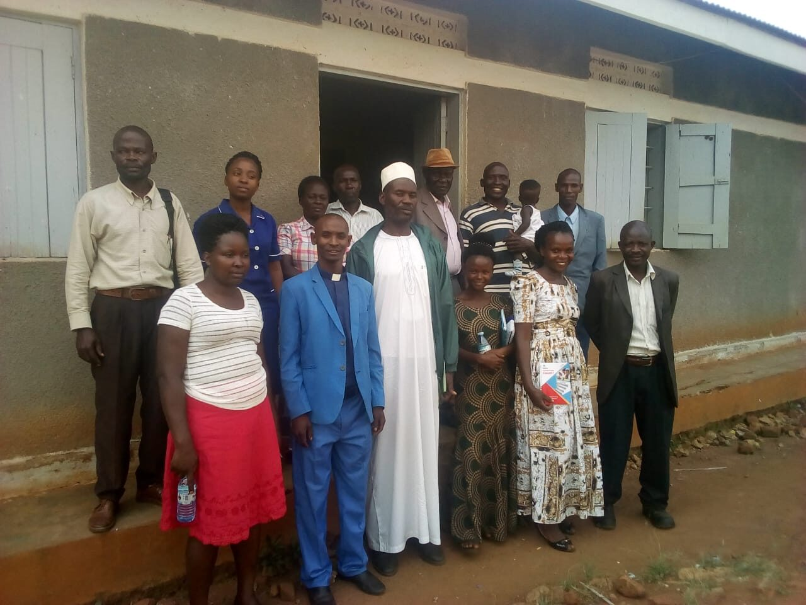

Central Secretariat
Kyenjojo Town Council
Kyenjojo District, Western Uganda
Home / Contact
Contact us
800 religious leader subscribers and 146 member FBOs across 10 district interfaith hubs and 3 sub-regional hubs in the Albertine Graben.

Central Secretariat
Kyenjojo District, Western Uganda
Clinical hub anchor
Kigoba (Nsinde) Village, Kyongera Parish, Kyarusozi Sub-County, Kyenjojo District
Green enterprise & conservation hub
Nsinde-Rwamaswajwa River Basin, Nyambeho Village, Nsinde Parish, Kyarusozi Sub-County, Kyenjojo District
Official email
ugandafbonetwork@gmail.comatuhairemoseswufbon@gmail.comutopiauganda@gmail.comWebsite & strategic plan